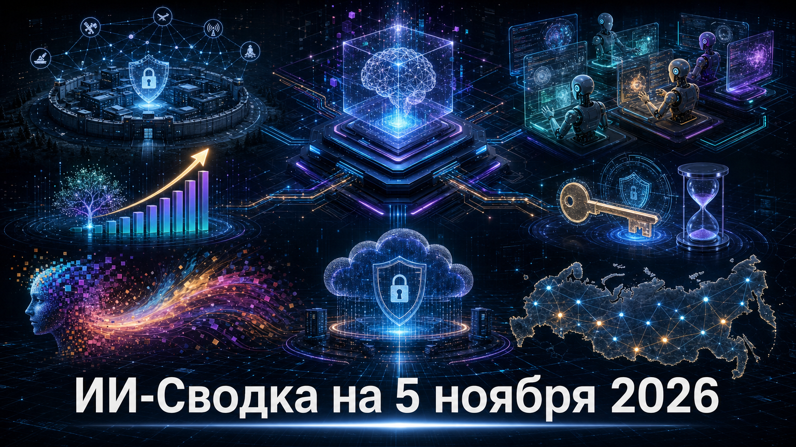

Сегодняшняя повестка соединяет три уровня ИИ-рынка: консолидацию инструментов разработки, масштабирование корпоративных внедрений и усиление требований к безопасности. Одновременно государственные структуры уточняют правила доступа к мощным кибервозможностям и пытаются выстроить координацию регулирования.
Для компаний главный практический вывод прост: ИИ всё чаще становится частью критичных рабочих процессов — от разработки и продаж до идентификации, облачной безопасности и государственного управления. Поэтому ценность моделей всё меньше отделима от контроля доступов, стоимости эксплуатации и понятных контуров ответственности.
WorkOS раскрыла несанкционированный доступ к внутреннему приложению продаж. Как сообщает BleepingComputer, атакующий применял ARTEX AI — фреймворк для offensive-security-задач — чтобы автоматизировать разведку и попытки эксплуатации.
Компания заявила, что production-сервисы и данные приложений не были затронуты. Однако в раскрытый массив могли войти деловые контакты, история аккаунтов, а также выдержки или сводки из коммуникаций продаж, поддержки и клиентских Slack-каналов. Случай важен не тем, что ИИ создал новый класс атаки, а тем, что он может ускорять обычную разведку и эксплуатацию в корпоративной среде; организациям нужны раздельные контуры доступа и минимизация данных во внутренних коммерческих системах.
Meta подтвердила покупку Conductor — стартапа, который организует параллельную работу нескольких агентных рабочих пространств над частями программного проекта. О сделке сообщила TechCrunch; финансовые условия стороны не раскрыли.
Для пользователей важен и операционный эффект сделки: Conductor Cloud должен перейти в режим только чтения 13 ноября и завершить работу 20 ноября, тогда как локальный продукт будет получать критические обновления до начала 2027 года. Сделка продолжает консолидацию рынка инструментов ИИ-кодинга вокруг крупных платформ: разработчикам стоит заранее проверять переносимость проектов, данных сессий и процессов оркестрации между облачными и локальными средами.
Palantir отчиталась о квартальной выручке в $2,31 млрд — на 96% выше год к году. По данным TechCrunch, выручка компании от коммерческого сегмента США достигла $984 млн, тогда как от государственных заказчиков США — $953 млн.
Компания также повысила годовые ориентиры по выручке и коммерческому направлению США. Это заметный рыночный индикатор: крупные организации всё активнее покупают не только модели, но и прикладные платформы для работы с данными, автоматизации и внедрения ИИ в процессы. При этом снижение объёма новых коммерческих контрактов относительно прошлого квартала напоминает, что быстрый рост выручки не отменяет риска замедления будущих продаж.
Anthropic выпустила Claude Code 2.1.318. Согласно официальным примечаниям к релизу, для побочных задач через model fork теперь можно отдельно задавать низкий уровень effort, не меняя настройки основной сессии.
В обновлении также появились сведения об истечении сохранённой авторизации claude.ai в командах статуса и JSON-выводе, а предупреждение выводится за десять дней до окончания срока действия. Для организаций это небольшой, но прикладной шаг: многоагентные workflow требуют управлять не только качеством результата, но и бюджетом отдельных веток, а также жизненным циклом учётных данных.
OpenAI объявила о выпуске Images 2.6, новой версии своего инструмента генерации изображений. В доступном официальном сообщении подтверждён сам запуск продукта, но технические характеристики, цены и независимые сравнения в исследовательском пуле не приведены.
Поэтому релиз стоит воспринимать прежде всего как обновление продуктовой линейки, а не как доказанное преимущество над конкурентами. Для дизайнерских команд, маркетинга и создателей контента практический вопрос остаётся прежним: тестировать новую модель на собственных задачах — в том числе на точности редактирования, устойчивости стиля, правах на исходные материалы и совместимости с существующим производственным процессом.
OpenAI сообщила, что Daybreak Red стала доступна в AWS GovCloud (US-East). Это расширяет контур предоставления специализированных кибервозможностей OpenAI в облачной среде, ориентированной на государственные и регулируемые американские нагрузки.
Само объявление подтверждает доступность, но не раскрывает условия допуска, круг клиентов и технические параметры сервиса. В более широком контексте это означает, что поставщики frontier-моделей продолжают переносить доступ к чувствительным инструментам в изолированные и контролируемые облачные контуры, а заказчикам важно заранее определять правила авторизации, журналирования действий и проверки допустимых сценариев использования.
Минцифры подготовило проект поправок к постановлению правительства №418, который может закрепить за министерством координацию проектов нормативных документов, связанных с ИИ. О предложении сообщил CNews; рассмотрение проекта правительством было назначено на 3 ноября.
Речь пока идёт о регуляторной инициативе, а не о вступившем в силу перераспределении полномочий. Если предложение будет принято, Минцифры может стать единым межведомственным узлом согласования правил для моделей, данных и внедрений. Для российского рынка это потенциально сократит разрозненность регулирования, но одновременно повысит значение раннего мониторинга проектов актов для поставщиков ИИ-решений и крупных пользователей.
*Meta и ее сервисы - в России запрещены